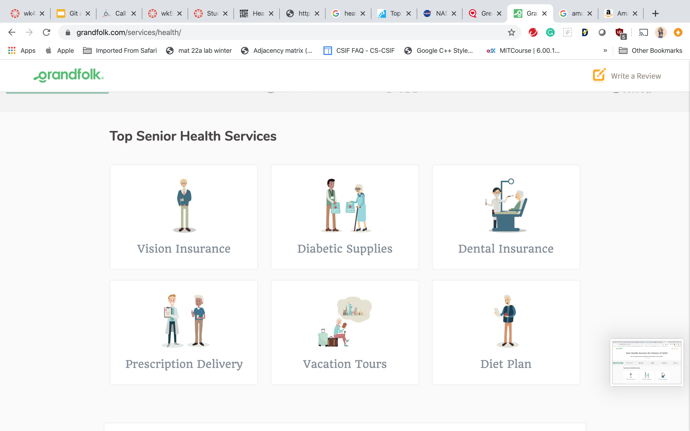
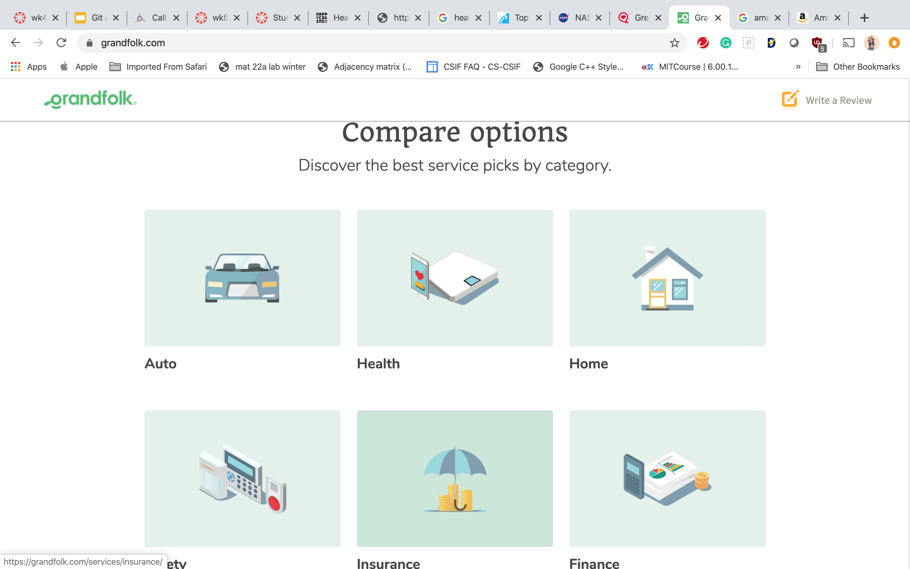
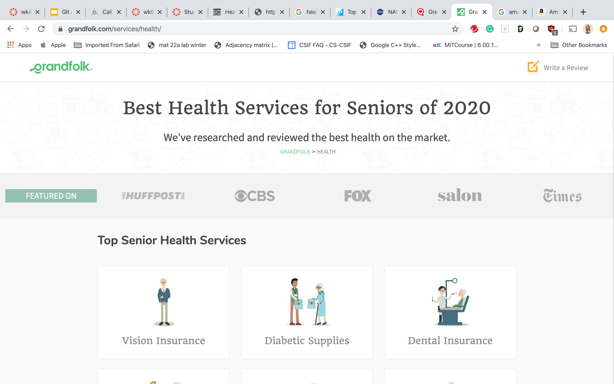
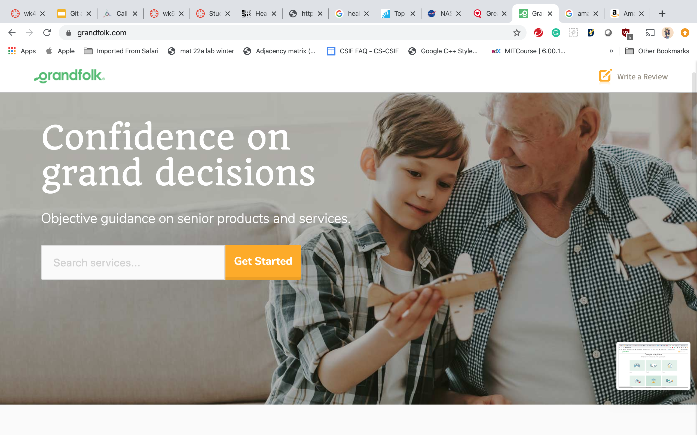

Site 1
For the first site, I want to discuss the grandfolk website. This is a site that developed mainly for elder people. Since for my final product I introduced on my abstract, I wanted to do some healthcare communication website that is includesive for older generation people. Thus, I wanted to make my UI for my final product as simple as possible. I am showing below an interface of the gradfolk.
In addition to that, I wanted to involve different health care feature on my site. For instance, I have to have different sections, which some for health care news, for health care information, for online talking with doctors and so on. Gradfolk did a great jobs to involve different sections at the home page, as the shown below.
I will also wanted to include some pictures at the home page that help people to understand the site
 